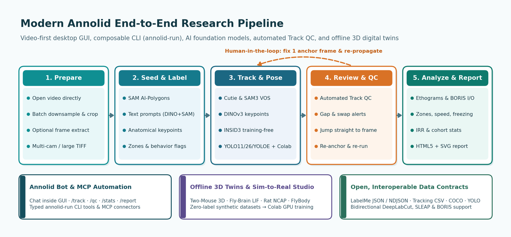
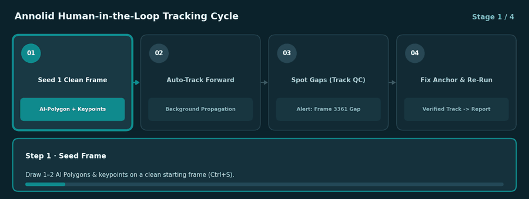
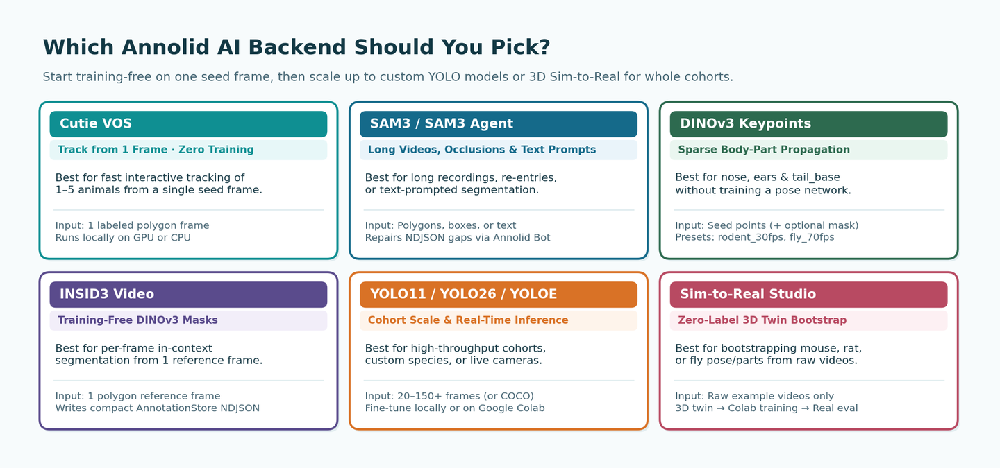

How Annolid Works (Technical Overview)#
Whether you are labeling a single 2-minute clip or analyzing a 100-video cohort, Annolid follows one clean, reviewable five-stage loop — with human-in-the-loop checkpoints at every step so you always know what happened and can fix mistakes in seconds.


Fig. 4 Annolid’s end-to-end research pipeline: open videos directly, seed one frame, propagate with foundation or custom models, audit with Track QC, and export reproducible reports.#
The Five-Stage Loop#
Prepare: Open your video directly in the GUI (
File → Open Video) — frame extraction is optional. For large folders of high-resolution videos, use Downsample & Crop to speed up interactive playback and inference.Seed & Label: Navigate to a clean representative frame and annotate your targets using SAM AI-Polygons, text prompts (Grounding DINO → SAM or SAM3), keypoints, spatial zones, and behavior flags.
Track & Pose: Propagate labels forward (or across segments) using a training-free tracker (Cutie, SAM3, DINOv3 Keypoints, INSID3) or run a trained YOLO11 / YOLO26 / YOLOE model locally or on Google Colab.
Review & Track QC: Run automated Track QC to surface missing frames, occlusion dropouts, velocity spikes, and identity swaps. Jump straight to the first error frame, fix one anchor mask, and re-propagate cleanly.
Analyze & Report: Compute spatial zone occupancy, calibrated kinematics, freezing bouts, ethogram time budgets, inter-rater reliability (IRR), and cohort statistics — exported as plain CSV/JSON plus a self-contained HTML5 + inline SVG report.


Fig. 5 Annolid’s human-in-the-loop tracking cycle: correct only the frames that actually need help instead of relabeling entire videos.#
Choosing the Right AI Backend#
Not every project needs custom model training. Use the guide below to pick the fastest path for your recording:


Fig. 6 Quick decision guide for choosing between training-free trackers, custom fine-tuned models, and 3D Sim-to-Real bootstrapping.#
Path A: Track from one frame (zero training — best starting point)#
Label 1 clean seed frame with AI-Polygons (SAM clicks) or text prompts.
Propagate masks across the video using Cutie, SAM3, or INSID3.
Add sparse body-part landmarks (nose, ears, tail base) with DINOv3 Keypoint Tracking.
Path B: Train a fast reusable model (best for large cohorts & real-time)#
Export ~20–150 corrected LabelMe frames (or an existing COCO dataset) to YOLO format.
Fine-tune YOLO11 / YOLO26 segmentation, detection, or pose models via the Training Wizard locally or on Google Colab.
Monitor curves and compare runs in the built-in Training Monitor (
Ctrl+Shift+V).
Path C: Bootstrap with 3D Digital Twins (zero manual labels)#
Point Sim-to-Real Studio at raw example videos of your arena.
Annolid matches lighting, arena geometry, and species in its bundled offline Three.js 3D simulator, generates labeled pose or body-part datasets, trains on Colab or locally, and evaluates back on your real videos.
Open, Reviewable File Formats#
Annolid never locks your work into opaque binary databases:
Artifact |
Format |
Purpose |
|---|---|---|
Manual seed frames & edits |
|
Human-readable polygons, keypoints, zones, and flags |
High-volume predicted frames |
|
Fast append-only storage without creating 50,000 tiny files |
Frame-by-frame tracking tables |
|
RLE masks, bounding boxes, centroids, speed, and zone columns |
Behavior schema & ethograms |
|
Shared across Flags, Timeline, Annolid Bot, and BORIS I/O |
External ecosystem exchange |
COCO JSON, YOLO |
Seamless round-trips with other lab pipelines |
Practical Performance Tips#
Downsample before tracking: Scaling 4K or 1080p footage to ~640–960 px wide dramatically improves Cutie, SAM3, and DINOv3 speed with minimal accuracy loss for most behavioral arenas.
Keep
annolid[gui]lean: Annolid starts quickly with a minimal GUI footprint and installs optional ML/tracking runtimes on demand (or upfront via--profile tracking/--profile workstation).Use hardware acceleration when available: Annolid automatically selects NVIDIA CUDA, Apple Silicon MPS, or CPU, and offloads heavy training to Google Colab when you only have a laptop.
Ready to install? Continue to Installation Options.